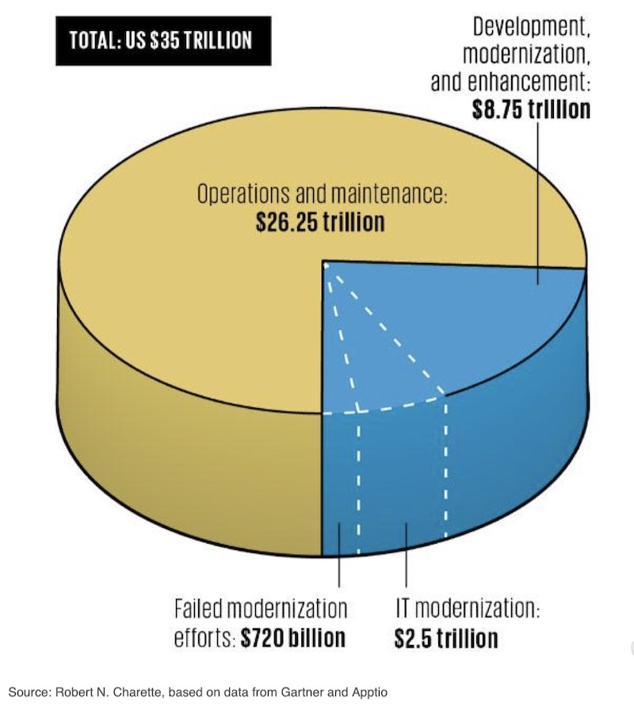
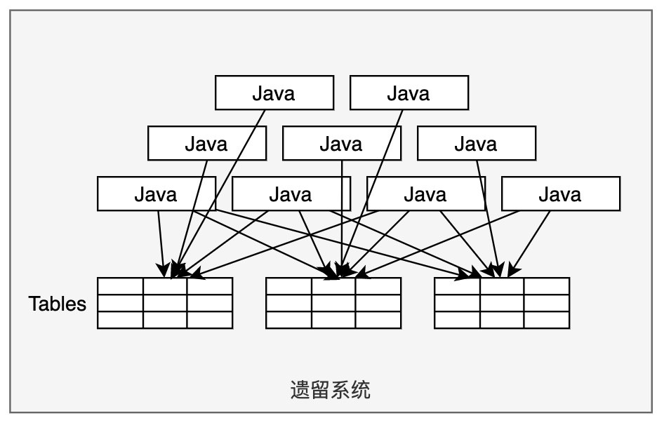
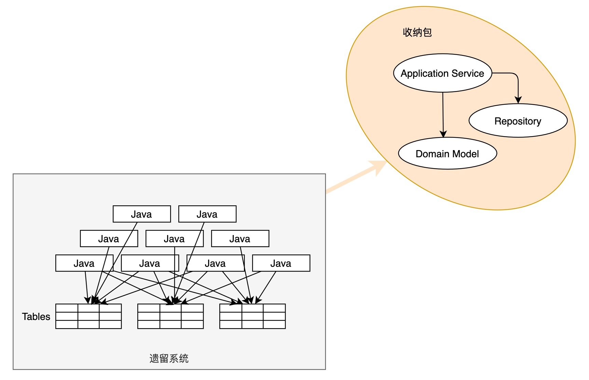
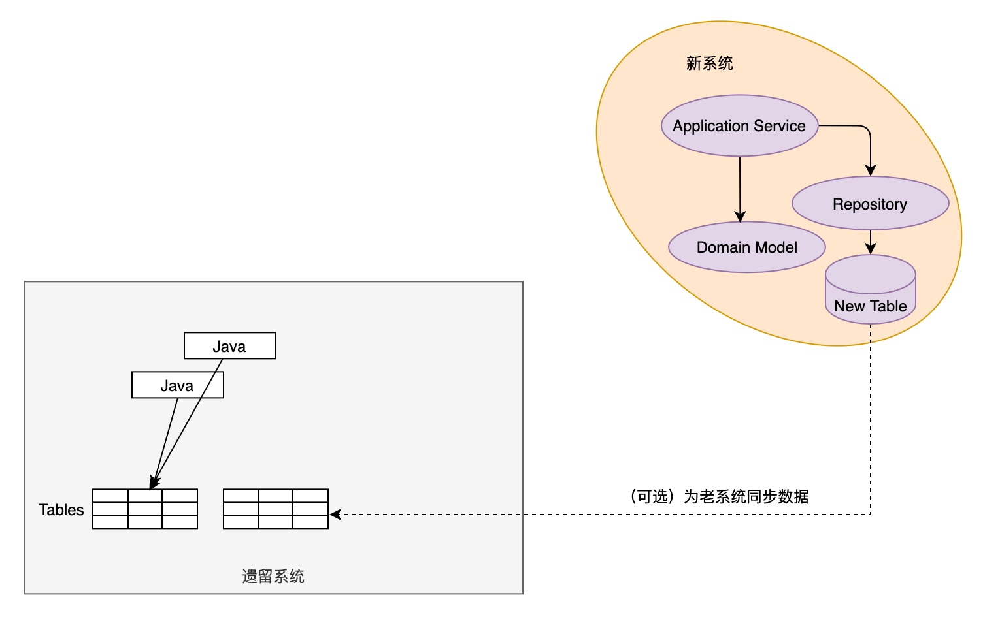

这几天大连车务段火了，因为Flash停用，导致车系统不能用，奋战24小时用Ghost和Flash降版本恢复使用。本来恢复就恢复了，可是把这个宣传成敢于攻关、敢于创新、敢于领先，就被全网程序员笑话了。
可是程序员朋友们，先别笑话那些业余选手，想想你手上的遗留系统改造了吗？
美国有位学者做了个研究：IT遗留系统的隐藏世界，他发现从2010年以来的10年内，全球的政府和企业花费了大约35万亿美元在IT系统和服务上，其中3/4用于维护现有的系统。至少有2.5万亿美元用来替换这些遗留系统，然后其中7200亿美元浪费了，因为替换失败。

图片来源：Inside the Hidden World of Legacy IT Systems
这是一个巨大的市场，而且咱们中国的遗留系统也会越来越多。但是困难也是很明显的，这些遗留系统一般承担着企业的核心业务，这些业务年久失修，当年的业务分析师找不着了、没文档、没测试，甚至有的供应商都没了。
对待这些遗留系统，怎么办呢？其实很矛盾，继续维护老系统吧，部门不出成绩，业务还老抱怨。重新开发新系统吧，这个锅大得很，不好接。毕竟这么多年的业务，能不能搞得定不说，辛苦开发完了，也要很久才能稳定下来，同样少不了抱怨。
最近几年，我做了好几个大型遗留系统的改造咨询项目，每个都是几百万行代码，有的系统已经有20年，最少的也有10几年。在看了几十万行代码、吸取了 Martin Fowler 、Eric Evans和Neal Ford等大牛的思想精华和自己的实践后，我逐渐认清了遗留系统这样一个现实：
- 重构无门
- 重写看缘分
- 绞杀才是王道
1. 重构无门
为什么重构无门？Martin Fowler定义的重构：
重构是在不改变代码行为的前提下，对其进行一系列小的改造，旨在改进系统结构的实践活动。
重构不改变业务逻辑、不加需求。程序员通过一系列重构手法，消除一个个坏味道，从而让代码更加合理、整洁。
之所以说重构无门，是因为我看到这样两个现象：
- 系统没有重构价值：本来不复杂的业务逻辑，由于混杂了业务和技术的复杂性，代码又腐化得严重，导致系统过于复杂，而且普遍没有测试。在这种情况下重构的成本太高。
- 团队没有重构能力：重构是一项需要具备很高技能的活动，遗憾的是绝大多数团队都不具备这样的能力。技术好的程序员一部分走向管理岗位，一部分忙于救火。技术差的程序员继续复制粘贴，挖更多的坑。重构是一项还需要大多数程序员长时间修炼的技能。
如果你恰好遇到以上两个情况，你可以放弃重构这条路了。
2. 重写看缘分
程序员是最喜欢重写的。脱离了老代码的技术债，可以在一片绿地上尽情地撒野。
对于遗留系统，如果没有高层的支持、业务部门的全力配合，给力的开发团队，重写基本就是个不可能完成的任务。
重写要特别注意系统切换的风险，如果等到最后全部完成再上线切换，不说是死路一条吧，至少也要损失半条命。
重写还要考虑周期不能太长，否则攒的一堆业务需求，业务方的压力可能会无法承受。
在我看来，**重写最致命的问题可能是一帮程序员在辛苦了半年、一年后，又重新开发了一个遗留系统。**因为在不断赶工、临时组建团队、业务不熟的情况下，只能牺牲质量来完成任务。
当然，在国内的环境，我还没有看到重写失败的案例，因为压根就不存在会失败的项目。所以我说重写是看缘分。
3. 绞杀才是王道
绞杀是Martin Fowler总结出来的一种模式，它来源于绞杀植物的一种隐喻。
绞杀植物，又名杀手树，指一种植物以附生来开始它的生长，然后通过根茎的成长成为独立生活的植物，并采用挤压、攀抱、缠绕等方式盘剥寄树营养，剥夺寄树的生存空间，从而杀死寄树。
这种植物包围着其它树的树干生长，并且向下扩展延伸，直到根系，然后快速生长，阻断里面的“寄树”的养分传输，最后导致其死亡。
Photo by David Clode on Unsplash
绞杀模式，就是不断增量地构建新系统来替换掉遗留系统，杀死老的，重建新的。
为什么说绞杀才是王道呢，至少有这么几个原因：
- 风险小：不像重写那样大动干戈，每次只替换一点，风险较小。
- 不影响业务：可以同时绞杀和新需求的开发，不需要暂停业务。
- 可操作：做局部的业务功能重写，从技能上对团队的要求没有那么高。但是要注意好边界的划分。
4. 如何绞杀
我们来看这样一个典型的遗留系统：系统运行了很多年，数据库结构非常复杂，而且别的系统还通过数据库集成，代码很混乱、模块之间耦合得非常严重，直接访问甚至修改其它模块的数据库表是很常见的事情。当然，作为一个遗留系统，测试肯定也是几乎没有的。

对于这样一个遗留系统，如何进行绞杀呢？
4.1 收纳法：不改变结构，分门别类
想象一下，如果你家里常年不收拾，东西非常凌乱，冬天、夏天的衣服，包括外衣、内衣、袜子等等都散落各个地方，各种玩具、杂物也散落得随地都是，你会怎么整理呢？
有一种新的职业叫收纳师，提供上门整理收纳的服务。收纳师会帮你收拾整理，分门别类地把东西放在适当的地方，但是不会调整内部的结构，例如不会动柜子、沙发、插座的位置。
对于遗留系统，同样可以运用收纳法进行第一步改造。因为老系统通过数据库集成，所以不能改变它的结构，但是要逐渐把代码分门别类地规整到不同的对象上。
这时候可以采用DDD的战术建模方法，对老的DB进行建模，提取出领域模型，这个新的领域模型就是一个收纳包。然后逐个梳理业务场景，将业务逻辑整理到新的收纳包中。

因为收纳包并没有改变数据库结构，Domain Model是业务逻辑的载体，Repository修改老的数据库，所以收纳包对老系统的影响很小，两者可以共存。
在收纳整理的过程中，需要DevOps技术实践和演进式架构的方法：
- 确保每一个收纳动作都是一次增量变更，判断依据很简单：是否可以独立上线。
- 使用适应度函数，对架构和风险点进行持续评估。例如在改造过程中，两套模型是共存的，如果有业务需求导致其中一套模型发生了变化，需要确保另一套模型也要相应修改，以确保最终的DB不受影响。
- “收纳包”应该采用合理的架构模式，例如分层架构。
- 新的架构要从一开始就做架构守护。
- 确定测试策略，确保新的业务代码能够做到充足的测试覆盖。
- 应用DevOps技术，加快构建、测试、部署和运维的反馈环。
不断地应用收纳法对一个个业务场景进行整理收纳，你就可以逐步演进到到一个高内聚、低耦合的系统。但这并不是终点，因为这时候领域模型是基于老数据库结构建立的，所以你的聚合可能会比较大、存在很多不合理的地方，接下来可以使用装修大法，实现领域模型的改造。
4.2 装修法：重新设计，分步装修
仍然以家庭收纳为例，虽然经过了收纳，东西都在它应该待的地方了。但是可能因为以前的装修不合理，你在这样的空间居住仍然感觉不爽，这时候可能就需要做一些大的动作了。例如重新买柜子、电力线路改造，加几个插座等等。于是，你重新设计了房间，开始装修。
并不是所有家庭都会重新设计装修，因此这一步并不是必须的。当遗留系统经过收纳整理后，就涌现出了很多聚合对象，业务逻辑已经围绕着聚合展开，代码的可维护性已经得到了非常大的提升。
为了进一步优化设计，可以应用装修法，调整聚合的模型，相应也要调整数据库的结构。包括建立新的数据库表、迁移数据、删除老的表。
与收纳法按业务场景改造不同，装修法按聚合进行改造。可以把一个聚合的改造作为一个增量变更，分步骤完成改造。需要注意的是，必须确保涉及到此聚合的所有业务场景都已经完成了第一步收纳的动作，否则仍然无法删除老的数据库表，改造不彻底。

如上图所示，随着领域模型的重新设计优化，一个遗留系统就逐渐重生了。如果老系统的个别表还存在外部系统的集成没有解开，可以通过数据同步完成。
总结
本文总结了遗留系统改造的方法，认为绞杀是比较理想的选择，风险小，对团队的能力要求没那么高。通过引入DDD战术建模、演进式架构和DevOps实践，可以实现增量、安全地小步绞杀，从而逐步改造出一个新系统。